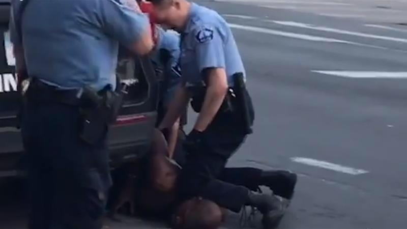

All That Matters
George Floyd: What happened in the final moments of his life
George Floyd, 46, died after being arrested by police outside a shop in Minneapolis, Minnesota. Footage of the arrest on 25 May shows a white police officer, Derek Chauvin, kneeling on Mr Floyd's neck while he was pinned to the floor. Mr Chauvin, 44, has since been charged with murder.
the arrest was made after Floyd was accused of using a counterfeit $20 bill at a market.Police said Floyd physically resisted arrest.Some media organizations commented that a security camera from a nearby business did not show Floyd resisting.The criminal complaint filed later said that based on body camera footage.

Floyd repeatedly said he couldn't breathe while standing outside the police car, resisted getting in the car and intentionally fell down.Several bystanders recorded the event on their smartphones, with one video showing Floyd repeating "Please", "I can't breathe", "Mama", and "Don't kill me" being widely circulated on social media platforms and broadcast by the media. While knee-to-neck restraints are allowed in Minnesota under certain circumstances, Chauvin's usage of the technique has been widely criticized by law enforcement experts as excessive. All four officers were fired the day after the incident.
After Floyd's death, demonstrations and protests in the Minneapolis–Saint Paul area were initially peaceful on May 26, and later that day became violent as a police precinct and two stores were set on fire, and many stores were looted and damaged. Some demonstrators skirmished with police, who fired tear gas and rubber bullets.Additional protests developed in over 200 cities throughout all 50 states in the United States as well as internationally.